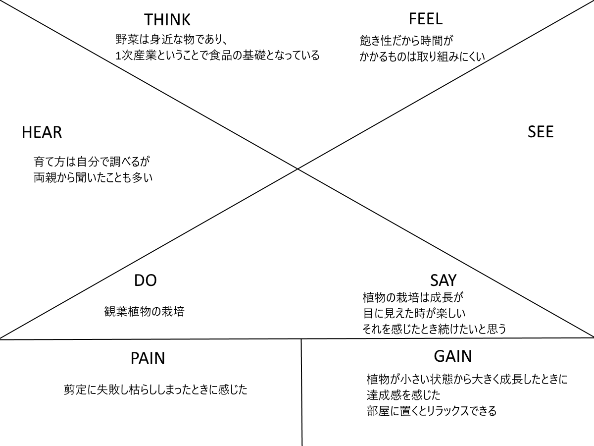
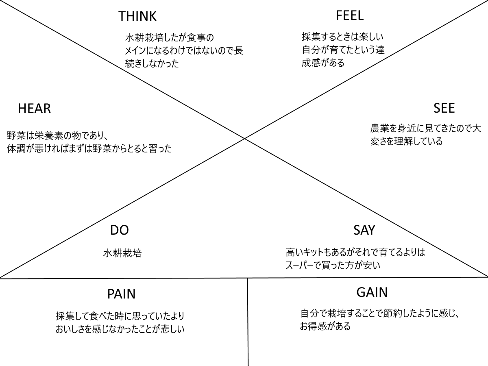

夏休み合宿でデザインシンキングに取り組みます。 その事前課題として農業を職業にしていない人にインタビューし共感マップを作成する。 主に聞く内容として下の4つが挙げられる。
ここで重要なのはこの4つをただ答えてもらうのではなく、インタビューを通して相手のこれまでの生き方や考え方、価値観など内面をわかるようにインタビューすることである。
そこで私は上記の4つの項目以外にもさらに深堀する質問をした。例としてはなぜ栽培を始めようと思ったのか、どうやって育てたのか、その育て方はどうやって知ったのか、なぜ栽培を始めなかったのか、なぜ嬉しい・楽しいと感じられたのか、失敗したこを次に活かすことはできたか、なぜ栽培方法を変えたのか、なぜ止めてしまったのか、単純な野菜の好き嫌いなどである。この中から少しでもその人の内面がわかるような手掛かりがないかと探りながらインタビューを進めた。
一人目はアルバイト先の先輩にインタビューした。私が作成したその人の共感マップがこちらです。
食べられるものを実家では栽培していて軽く手伝いをした経験がある。自分の力で栽培した経験はないが、観葉植物を栽培していたのでそれについて深堀してインタビューしてみた。すると、この人は植物に癒しを求め、育て方をなど他人の意見をを素直に受け入れられる人物なのではないだろうか。
2人目は一人暮らしをしている姉にインタビューした。
姉の友人が水耕栽培をしているのを見たことがきっかけで始めたそうだ。これは始めるきっかけであり、節約したいというのが大きな理由ということがインタビューでわかった。この人は何かに取り組むときにそれに見合った報酬を求める人なのではないかと思った。その理由として水耕栽培をすることで節約できるというお得感と育てた植物が思ったよりおいしくなかったと感じたなど成果を求めているような気がした。